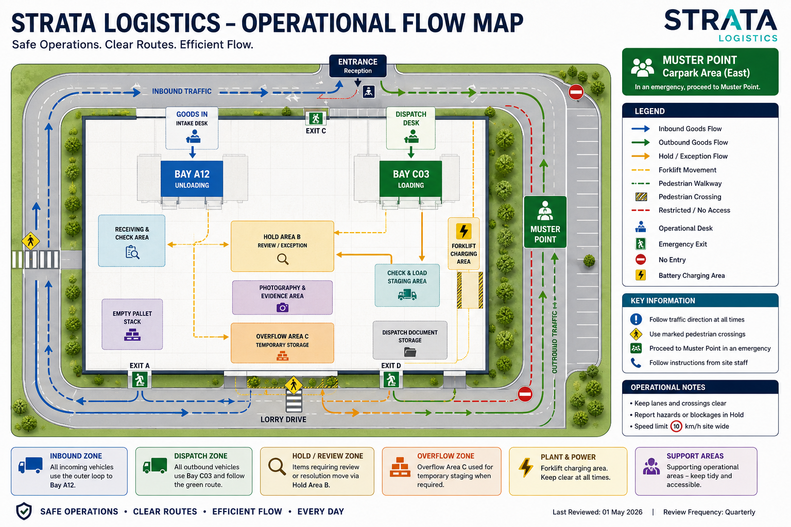

Equipment State
Inspection due before next movementForklift 04 is currently assigned to shared dispatch support. Complete the visible condition check before movement continues.
Hold / Strata Logistics / FLT-04
Cab Scan · Equipment-Aware Operator View
Inspection DueCurrent movement context across Bay C03, Hold Area B, shared dispatch routes and charging access.

Forklift 04 is currently assigned to shared dispatch support. Complete the visible condition check before movement continues.
Support mixed dispatch movement between Hold Area B and Bay C03. Confirm route access before collecting or moving wrapped loads.
Forklift 04 may be reassigned during active dispatch coordination. Handover notes should remain visible through the active scan record so equipment, operator, load and route responsibility stay connected.
Mixed intake and dispatch movement may be active across shared routes. Keep Bay A12 intake, Bay C03 crossing activity and charging access clear, and do not continue if the route, bay or marshal instruction does not match the current scan view.
View the Forklift 04 workflow map and related operational movement context.
Check battery level before entering an active dispatch movement. If charge level is low, report before accepting the next movement task.
Watch for pedestrian movement, pallet staging, vehicle reversing and forklift crossing activity near Bay C03 and Hold Area B. Report route obstruction before using an alternative route.
Delay logged. Supervisor visibility updated so Bay A12, Bay C03 and current load responsibility remain visible during active dispatch coordination.
Route obstruction reported. Pause movement until the route is confirmed clear.
Hold Area B movement selected. Confirm load identity, source area and route clearance before transfer.
Supervisor requested. Remain in safe position until instruction is confirmed.
Other issue recorded. Add details so human judgement remains visible in the operational record.